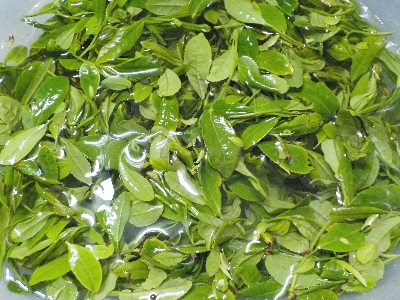
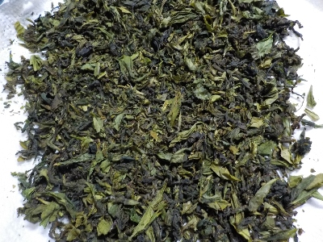
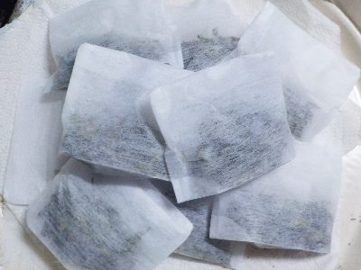

ゴールデンウィークは時間があるので、一人で茶摘みをしました。
更新日 : 2026/05/02

お茶の木が密集して生えているので、根元からバサバサ剪定しました。
切り取った木の先端の若い葉っぱを集めました。一応茶摘みです。
葉焼けしたものが多くあり、使えるものの選別が面倒でした。
そしてそれを洗うのも面倒です。最初は丁寧にやっていましたが、途中から雑になりました。
農薬使ってないので、ほこりが落ちれば十分でしょう。
更新日 : 2026/05/02

お茶の木が密集して生えているので、根元からバサバサ剪定しました。
切り取った木の先端の若い葉っぱを集めました。一応茶摘みです。
葉焼けしたものが多くあり、使えるものの選別が面倒でした。
そしてそれを洗うのも面倒です。最初は丁寧にやっていましたが、途中から雑になりました。
農薬使ってないので、ほこりが落ちれば十分でしょう。
更新日 : 2026/05/03

昨日洗ったお茶の葉をレンジで温めて揉み、温めて揉みを繰り返しました。
柔らかい葉っぱが、だんだん乾燥して黒く固くなってお茶っぽくなりました。
ちょっとムラがありますが、自宅で作る分にはこんなもんで合格でしょう。

お茶パックに詰めて完成です。10パック出来ました。
味ですが、甘味はあったんですが渋みが少ないかなと思いました。
1パックが濃すぎたので、1/2とか1/3に詰めなおして使って飲もうと思います。
手間暇かかりましたが、沢山飲めそうです。
意外と家でもそれなりのお茶が出来ました。ゴールデンウィークは毎年作ろうかな。